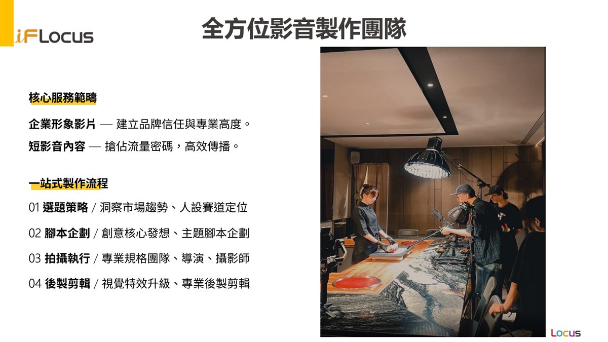
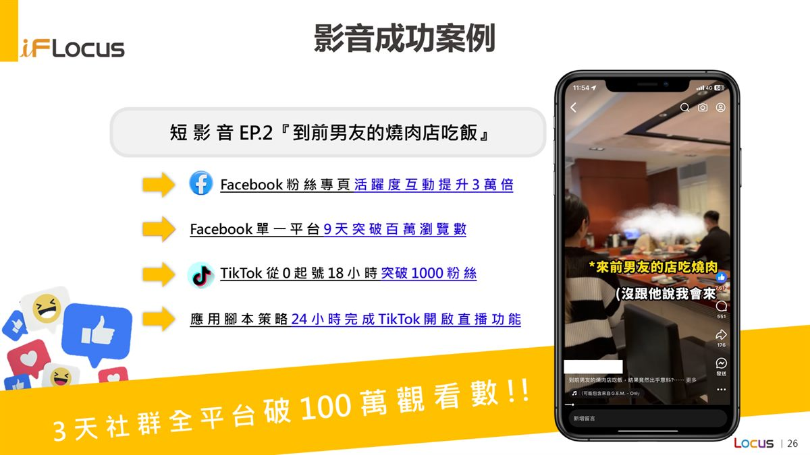
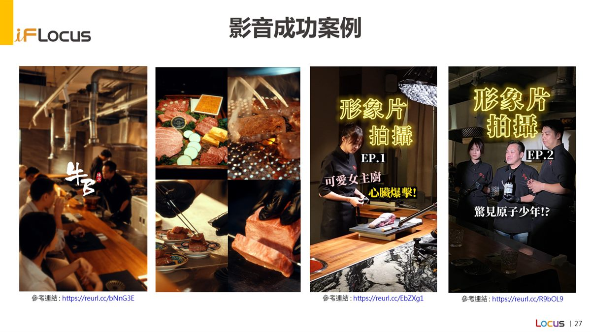
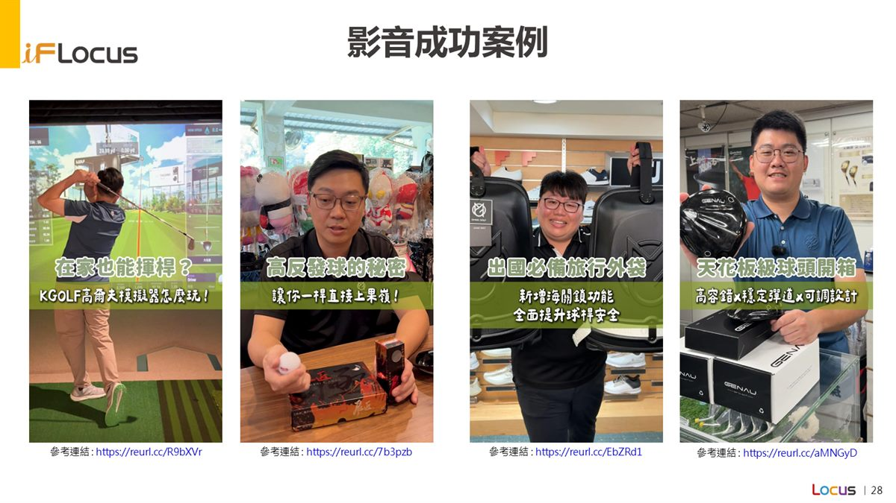

從選題策略、腳本企劃、專業拍攝到後製剪輯，以行銷成效為核心打造影音內容。
建立品牌信任與專業高度，適合官網、簡報、展會與品牌介紹使用。
規劃 TikTok、Reels、Shorts、Facebook 等平台適用的短影音內容。
拍攝品牌發表會、快閃活動、展會活動，延伸活動後續聲量。
製作適合 Meta、YouTube、LINE 等媒體投放的多版型素材。
洞察市場趨勢、受眾興趣與品牌目標，找到值得拍的內容主題。
設計故事線、開場鉤子、轉換訊息與平台適用版型。
安排導演、攝影、燈光、現場調度與素材規格管理。
完成剪輯節奏、字幕、特效、音樂與多尺寸輸出。
依社群或廣告成效調整素材版本，讓內容持續發揮效益。
先放入 PPT 中的服務流程、成效與作品參考頁，後續可再改成影片嵌入或作品集卡片。

從選題策略、腳本企劃、拍攝執行到後製剪輯，完整支援品牌影音需求。

以腳本策略與平台節奏設計，創造高觀看數、粉絲成長與互動提升。

PPT 中整理的影音作品參考連結，後續可改為正式影片嵌入。

保留第一版視覺素材，方便下一階段整理成完整作品集。
透過腳本策略與平台節奏設計，協助短影音內容快速擴散。
讓影音不只帶來觀看，也帶動粉絲成長、留言互動與品牌討論度。
將拍攝素材拆解成多版廣告素材，提高投放測試與優化彈性。